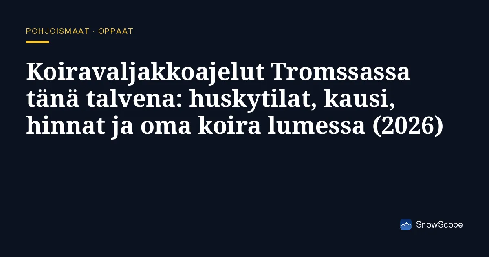

Koiravaljakkoajelut Tromssassa tänä talvena: huskytilat, kausi, hinnat ja oma koira lumessa (2026)
Tromssan huskytilat vaihtavat kesän kärryt rekiin heti, kun lunta on tarpeeksi, ja virallisen matkailuorganisaation mukaan rekiajelut ajetaan yleensä marraskuusta huhtikuuhun. Tänä vuonna maa kaupungissa on vasta juuri ja juuri valkoinen: Tromssan sääasema 114 metrissä mittasi aamulla 13. marraskuuta 6 cm, kun taas Lyngenin Alppien Gjerdvassbussa, 710 metrissä, lunta oli 44 cm. Norjan kansallinen lumikartta arvioi kaupungin yläpuolisilla rinteillä 492 metrissä olevan noin 40 cm. Tässä on se, mitä sinun tarvitsee tietää ennen varaamista ja ennen kuin viet oman koirasi ulos.
Katso kohteen Scandinavia lumiennuste reaaliajassa SnowScope-sovelluksessaLumensyvyys, puuterihälytykset ja 3D-kartta, ilmaiseksi.

Tilat ja millainen retki on
Useimmat ajelut tapahtuvat kaupungin ulkopuolella, lännessä Kvaløyalla tai idän laaksoissa, missä on enemmän lunta eikä liikennettä. Kolme Visit Tromsøn listaamaa yrittäjää julkaisee selkeät tiedot omilla sivuillaan:
Kvaløyalla toimiva Tromsø Villmarkssenter ajaa huskyrekiajelua päivittäin 15. marraskuuta – 30. huhtikuuta 2027. Itse ajelu kestää noin 45 minuuttia yhteisessä reessä, jota opas ajaa, osana noin neljän tunnin retkeä kuljetuksineen, ja se maksaa aikuiselta 3 390 NOK. Samalla tilalla on yli 300 alaskanhuskya ja huskykahvila.
Breivikeidetissä toimiva Best Arctic tarjoaa noin 5 tunnin aamuretken alkaen 2 990 NOK hengeltä. Niin ikään Kvaløyalla toimiva Active Tromsø ajaa marraskuusta maaliskuuhun noin 7 tunnin aktiivisen valjakkopäivän.
Pimeys ratkaisee enemmän kuin lumi
Aurinko laskee kauden ajaksi marraskuun lopulla. Visit Tromsøn mukaan kaamos kestää suunnilleen 27. marraskuuta – 15. tammikuuta. Se ei tarkoita säkkipimeää keskipäivällä: muutaman tunnin ajan on sinistä hämärää, ja monet tilat ajavat retkiä silloin. Suunnittele kuitenkin aikaiset lähdöt, ota otsalamppu ja älä odota auringonpaistetta kuviin marraskuun lopun jälkeen.
Oman koiran vieminen lumelle
Norjan valtakunnallinen kytkentäaika on 1. huhtikuuta – 20. elokuuta, joten talvella valtakunnallinen sääntö on väljempi. Tromssa lisää omansa: koirien on oltava kytkettyinä ympäri vuoden taajamissa, keskustassa, urheilukentillä ja valaistuilla laduilla. Kunta muistuttaa koiranomistajia myös siitä, että koko Tromssa, mantereen puoli ja Kvaløya, on ympäri vuoden porojen laidunaluetta, joten pidä koira lähellä ja kytkettynä, kun poroja voi olla lähistöllä.
Jos koirasi tarvitsee päästä juoksemaan vapaana, kaupungissa on aidatut koira-aitaukset Krokenissa ja Charlottenlundissa. Ajetuilla laduilla kävele ladun vieressä, älä ladulla, ja kerää koirasi jätökset.
Vinkkejä laskijoille
- Varaa valjakkoajelu kauden alkupuoliskolle, jos haluat päivänvaloa: marraskuun lopussa aurinko katoaa tammikuun puoliväliin asti.
- Pukeudu reessä paikallaan istumista varten: liikkuvan reen ilmavirta saa lievän pakkasen tuntumaan paljon kylmemmältä.
- Oman koiran kanssa: kytke valaistuilla laduilla ja kaupungissa, ja kierrä porot reilusti.
Lähteet ja tekijät
- Visit Tromsø, koiravaljakkoajelut (virallinen matkailuorganisaatio) www.visittromso.no/dog-sledding
- Tromsø Villmarkssenter, huskyrekiajelu www.villmarkssenter.no/booking/husky-sled-ride/
- Best Arctic, koiravaljakkoajelut Breivikeidetissä bestarctic.com/
- Active Tromsø, aktiivinen valjakkopäivä www.activetromso.no/dog-sledding/one-day-active-dog-sledding/
- Visit Tromsø, talvi ja kaamos www.visittromso.no/winter
- Lovdata, Hundeloven (Norjan koiralaki), kytkentäaika lovdata.no/dokument/NL/lov/2003-07-04-74
- Tromssan kunta, lenkillä koiran kanssa (paikalliset säännöt, koira-aitaukset, poroalue) www.tromso.kommune.no/natur-kultur-og-fritid/tur-og-friluftsliv/pa-tur-med-hunden
- Visit Tromsø, Kvaløya ja Sommarøy (Husky Café) www.visittromso.no/region/kvaloya-sommaroy
- seNorge, Norjan kansallinen lumikartta (NVE ja MET Norway), avoin data NLOD-lisenssillä www.senorge.no/
- MET Norway, asemahavainnot (CC BY 4.0), päivittäiset raportit Ogimetin julkaisemina www.ogimet.com/
Näistä luvuista
Lumi: aamulukemat 13. marraskuuta 2026 Ruotsin (SMHI), Suomen (Ilmatieteen laitos) ja Norjan (MET Norwayn asemaraportit, CC BY 4.0, julkaisija Ogimet) virallisilta sääasemilta; Norjan tunturirinteille kansallinen lumikartta seNorge (NVE ja MET Norway, NLOD), arvio. Yritykset: viralliset matkailuorganisaatiot listaavat ne, ja päivämäärät, kestot ja hinnat on luettu yritysten omilta sivuilta 13.11.2026; hinnat muuttuvat, tarkista ennen varaamista. Säännöt: kansalliset lait ja kuntien säännöt, linkit alla.
Viittaa tähän raporttiin
Tutkimukseen, opetukseen tai mediaan: luvut ja kaaviot ovat vapaasti käytettävissä CC BY 4.0 -lisenssillä tällä lähdeviitteellä.
SnowScope (2026), Koiravaljakkoajelut Tromssassa tänä talvena: huskytilat, kausi, hinnat ja oma koira lumessa (2026), https://snowscope.app/blog/fi/2026/11/tromso-dog-sledding-husky-farms-winter-guide-2026.html, luettu 2026-11-14
SnowScope (Atlas Labs). (2026, November 14). Koiravaljakkoajelut Tromssassa tänä talvena: huskytilat, kausi, hinnat ja oma koira lumessa (2026). SnowScope snow reports. https://snowscope.app/blog/fi/2026/11/tromso-dog-sledding-husky-farms-winter-guide-2026.html
BibTeX
@misc{snowscope2026tromsodogsleddinghuskyfa,
author = {{SnowScope (Atlas Labs)}},
title = {Koiravaljakkoajelut Tromssassa tänä talvena: huskytilat, kausi, hinnat ja oma koira lumessa (2026)},
year = {2026},
month = nov,
howpublished = {\url{https://snowscope.app/blog/fi/2026/11/tromso-dog-sledding-husky-farms-winter-guide-2026.html}},
note = {Published 2026-11-14 14:19 UTC; accessed 2026-11-14}
}· CC BY 4.0 · Menetelmät, data ja työkalut →
Seuraa: Scandinavia
Ilmainen: viesti, kun uutta lunta on tulossa, ja ennuste joka aamu.